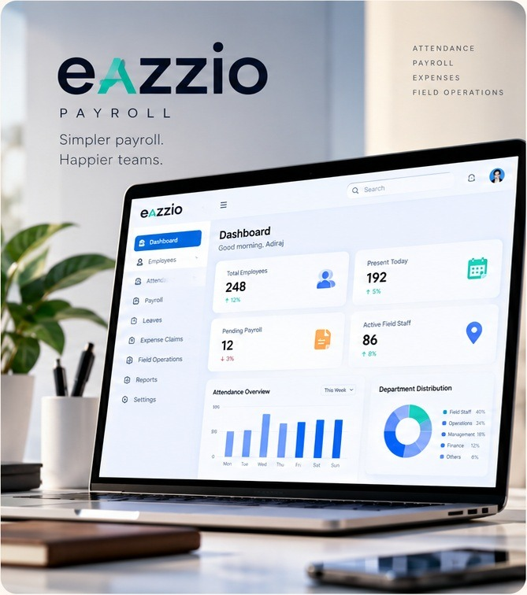

01 / Web Application · Payroll & HR
Eazzio Payroll — making everyday payroll workflows easier to manage
A payroll-focused web experience built around clear employee information and straightforward workflows. The goal is to make routine operations easier to navigate through a clean interface and a more organized user experience.
Employee workflows · Clear, responsive UI